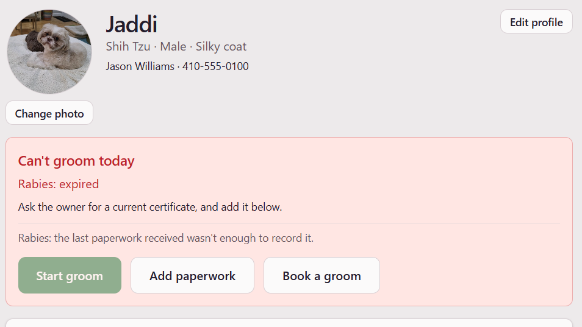

Part one · A dog grooming platform
The Missing Date
Jaddi's rabies shot came with an invoice, a date, and no expiry. A small grooming shop has to decide whether he's covered, and so does the AI it might use to read the paperwork. This is the story of a system built to say "I don't know" instead of guessing, with a live demo where you get to stand at the counter.
Read the story →